Colori accesi ma eleganti, non cartoon. Per confrontare solo i colori, PRIMA e OGGI sono rifatti con la stessa impaginazione delle tre strade (in fondo ci sono le foto dell'app vera). Le foto dei giochi e gli avatar sono quelli veri. Telefono 390×844.
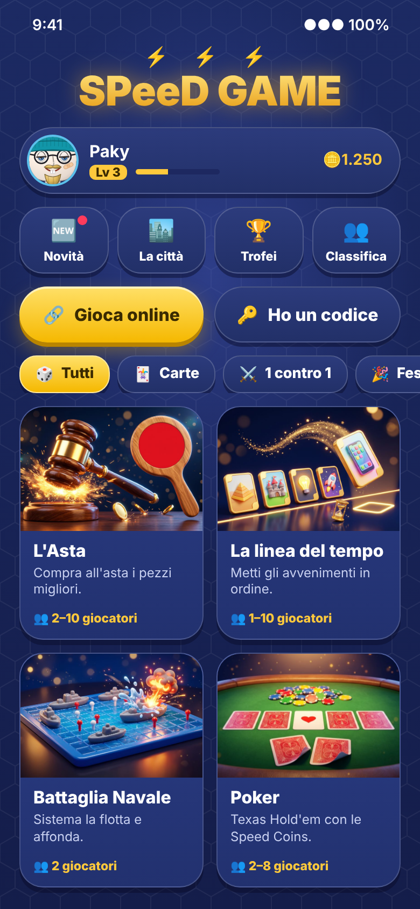
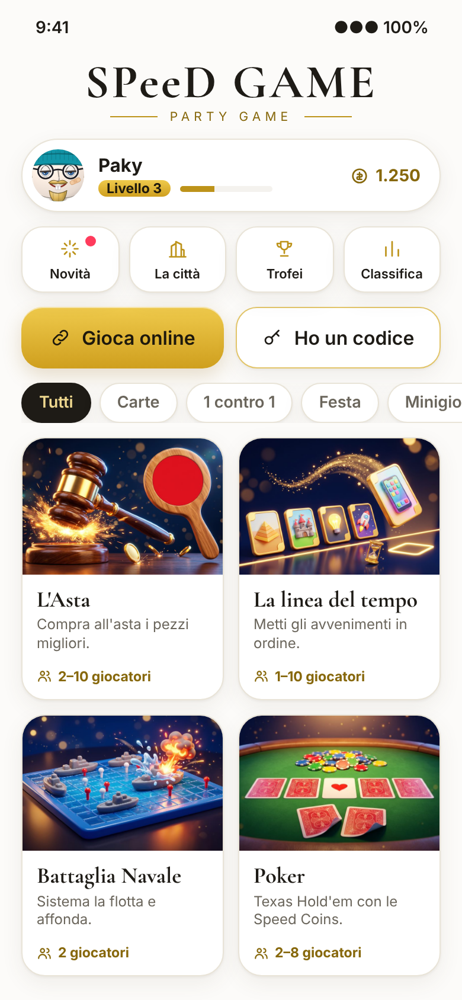
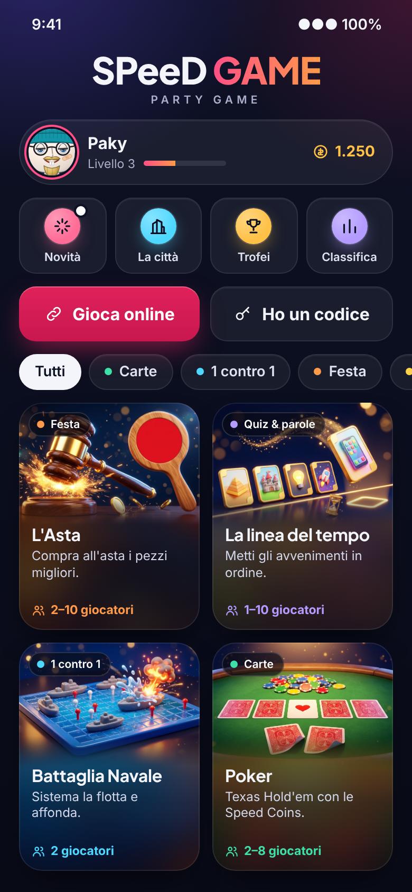
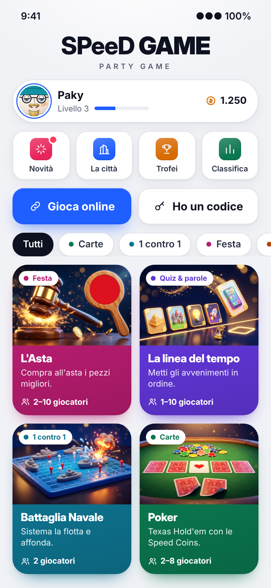
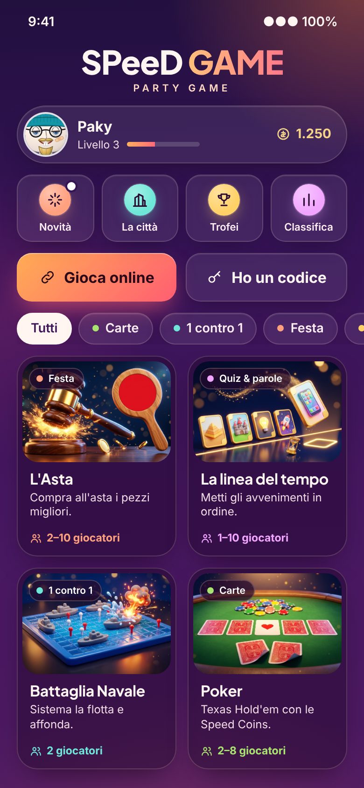
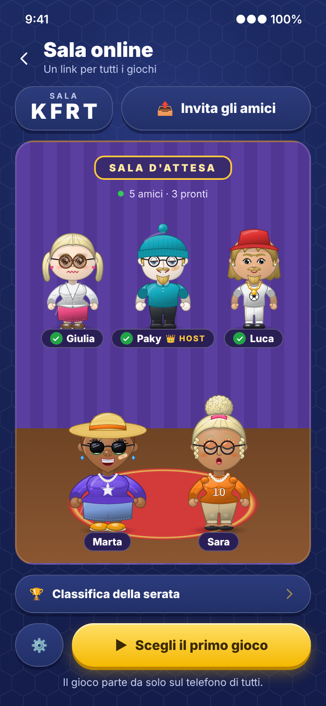
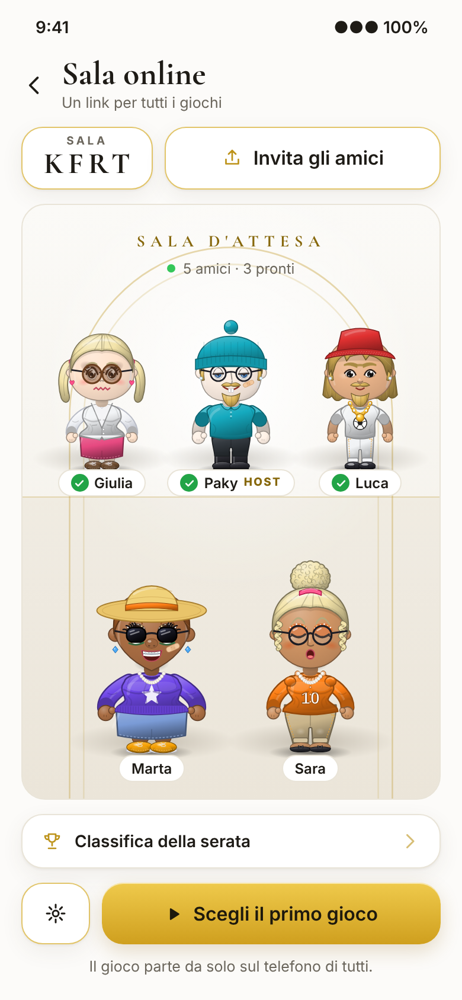
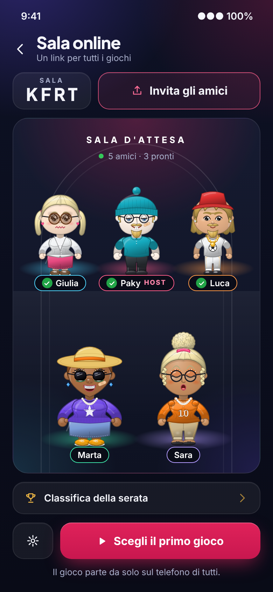
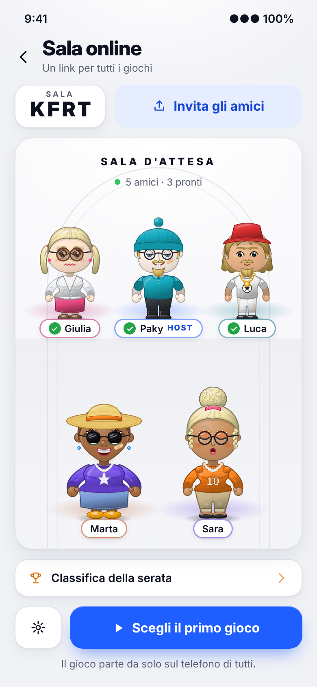
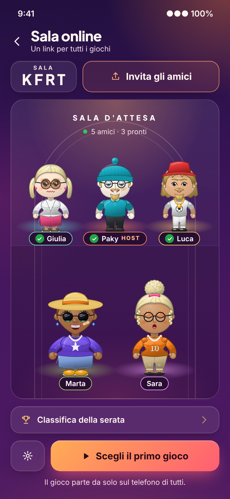
Contrasto misurato con la formula delle linee guida per l'accessibilità (WCAG): serve almeno 4,5:1. Dove il fondo cambia (sfumature, vetro, foto sotto le scritte) è calcolato nel punto peggiore.
Blu notte quasi nero, vetro scuro e un colore guida lampone; ogni categoria ha il suo colore brillante.
| Testo sul fondo | 12:1✓ |
| Testo secondario sul fondo | 5,8:1✓ |
| Testo sui riquadri di vetro | 10,3:1✓ |
| Testo secondario sui riquadri | 5:1✓ |
| Scritta del tasto principale (lampone) | 4,6:1✓ |
| Titolo della tessera (foto bianca sotto) | 14,6:1✓ |
| Riga sotto il titolo (foto bianca sotto) | 9,1:1✓ |
| «Giocatori» nei colori delle categorie | 6,3:1✓ |
| Nomi nella saletta | 13,7:1✓ |
| «Host» nella saletta | 5,6:1✓ |
Fondo chiaro neutro (grigio freddo, niente avorio), tasti blu pieni e ogni categoria con il suo colore saturo, come Apple Arcade.
| Testo sul fondo | 16,8:1✓ |
| Testo secondario sul fondo | 5,6:1✓ |
| Testo sui riquadri bianchi | 18,8:1✓ |
| Testo secondario sui riquadri | 6,2:1✓ |
| Scritta del tasto principale (blu) | 5,1:1✓ |
| Scritte bianche sulle tessere colorate | 5,6:1✓ |
| Riga sotto il titolo (bianco al 90%) | 4,8:1✓ |
| Etichetta della categoria (sul bianco) | 5,6:1✓ |
| Nomi nella saletta | 18,8:1✓ |
| «Host» nella saletta | 6,5:1✓ |
Un cielo di sera dal viola al rosso vino con un riflesso arancio, vetro caldo, tasti arancio-corallo; l'oro solo nei dettagli (monete, «host», filetti del logo).
| Testo sul fondo (punto più chiaro, in basso) | 6,4:1✓ |
| Testo secondario sul fondo (punto più chiaro) | 5,4:1✓ |
| Testo sui riquadri di vetro (caso peggiore) | 5,4:1✓ |
| Testo secondario sui riquadri (caso peggiore) | 4,6:1✓ |
| Scritta del tasto principale (arancio-corallo) | 6,1:1✓ |
| Testi sulle tessere di vetro | 8,9:1✓ |
| «Giocatori» color pesca sulle tessere | 8,1:1✓ |
| Nomi nella saletta | 10,8:1✓ |
| «Host» color oro nella saletta | 7,5:1✓ |
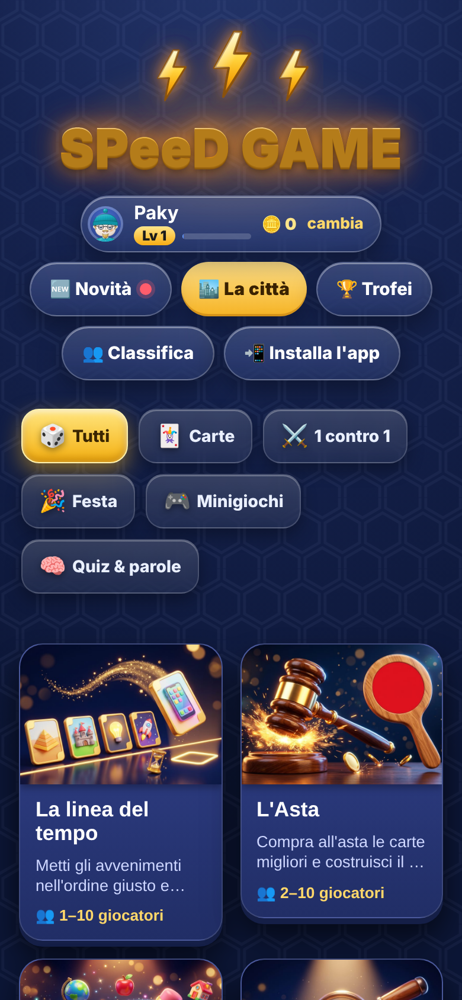
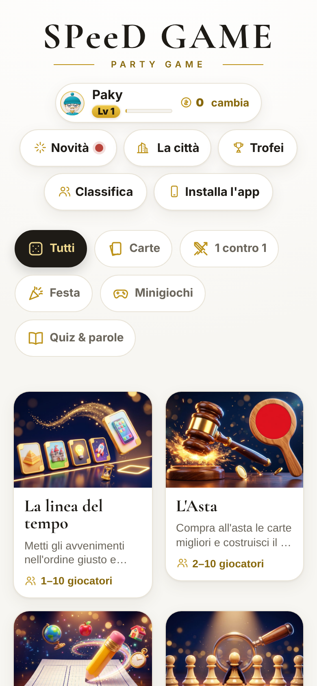
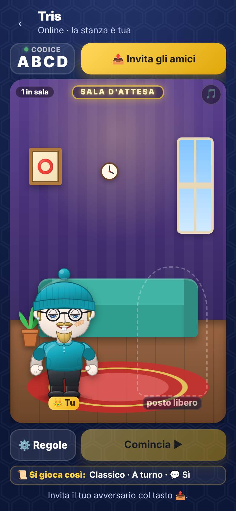
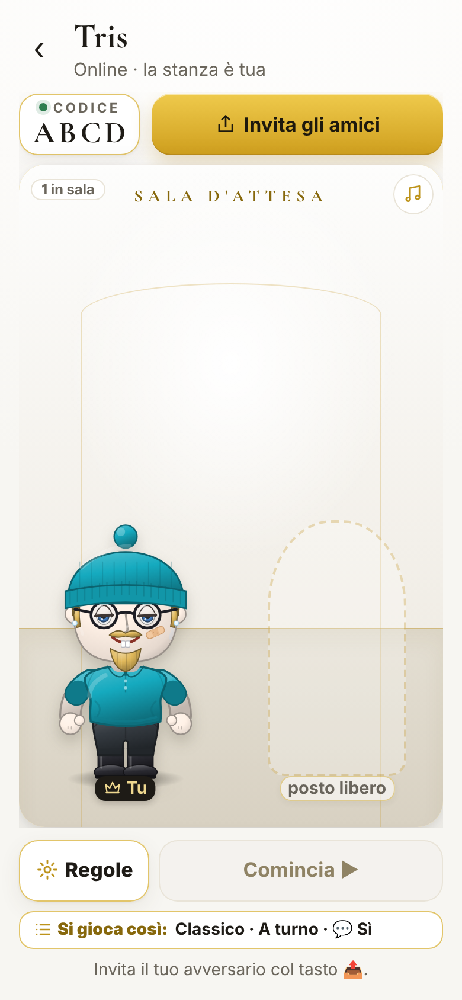